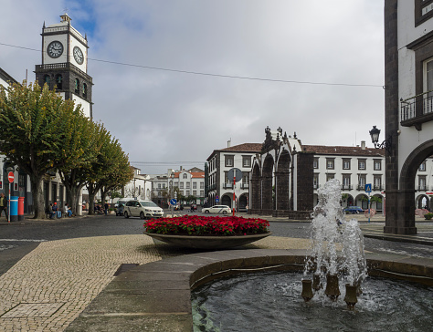

Fort Saint-Jean em Marseille, França

Vista panorâmica do Gallipoli. Puglia. Itália.

Portugal, Ponta Delgada São Miguel
Conheça mais cidades


The Grand Harbour, also known as the Port of Valletta, is a natural harbour on the island of Malta. It has been substantially modified over the years with extensive docks, wharves, and fortifications.